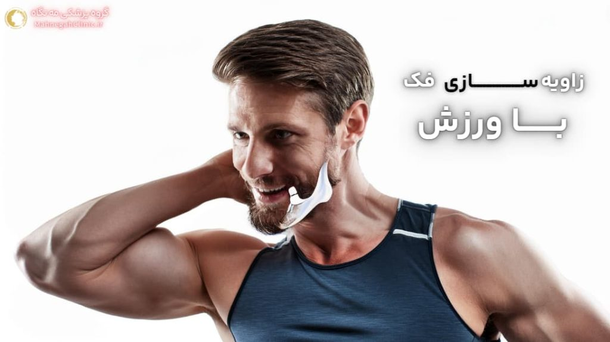
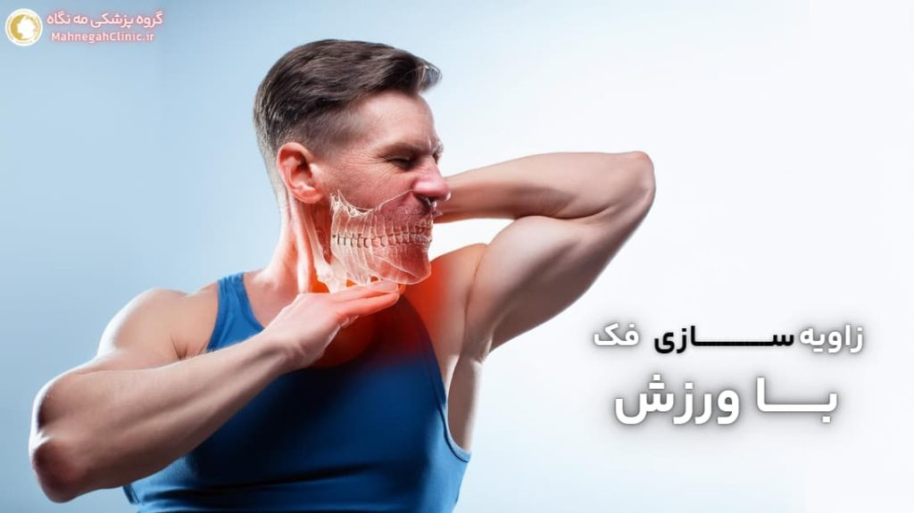
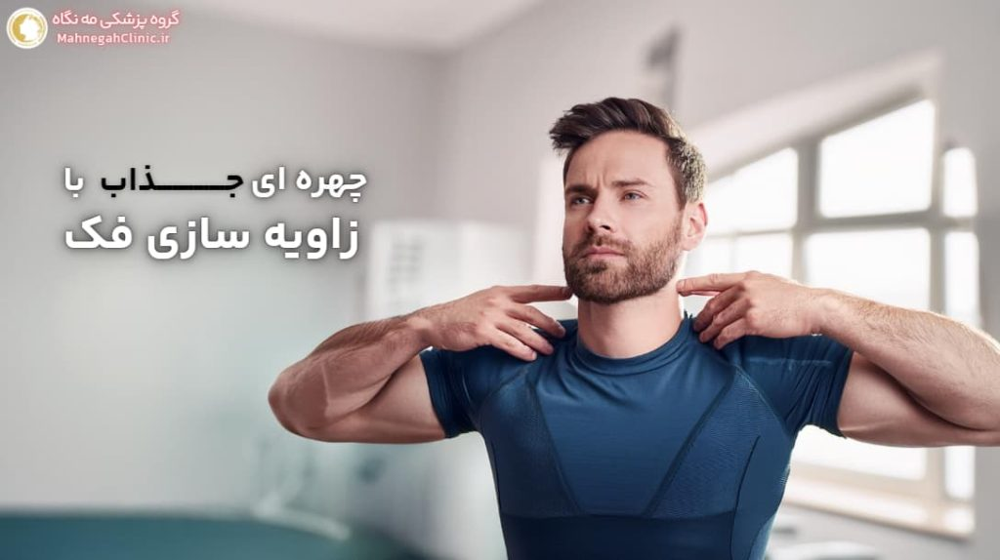

خانه / مجله / زاویه سازی فک
زاویه سازی فک با ورزش: آیا واقعا موثر است؟

آیا با ورزش میتوان فک زاویه داری ساخت؟
زاویه سازی فک با ورزش یا تقویت و برجستهسازی فک (زاویه سازی فک) با ورزش یکی از موضوعات پرطرفدار در دنیای زیبایی و تناسب اندام است. اما آیا واقعاً میتوان با ورزش به زاویه فک دلخواه دست یافت؟
در این بخش به بررسی تاثیر ورزش بر عضلات فک و صورت و انتظارات واقعبینانه از این روش میپردازیم.
تاثیر ورزش بر عضلات فک و صورت
عضلات صورت و فک، مانند سایر عضلات بدن، قابلیت تقویت و رشد دارند. با انجام تمرینات منظم و هدفمند، میتوان این عضلات را تقویت کرد و به آنها فرم و حجم بیشتری بخشید.
این تقویت عضلات میتواند به بهبود خط فک، کاهش غبغب و ایجاد ظاهری خوشتراشتر در چهره کمک کند.
انتظارات واقع بینانه از ورزش برای زاویه سازی فک
اگرچه ورزش میتواند به بهبود ظاهر فک کمک کند، اما نباید انتظار نتایج معجزهآسا و فوری داشت.
تاثیر ورزش بر زاویه سازی فک معمولاً تدریجی است و نیاز به صبر، استمرار و انجام صحیح تمرینات دارد. همچنین، میزان تاثیر ورزش به عوامل دیگری مانند ژنتیک، سن، ساختار استخوانی و درصد چربی بدن نیز بستگی دارد.
به طور کلی، ورزش میتواند به عنوان یک روش مکمل و کمهزینه برای بهبود ظاهر فک و صورت در نظر گرفته شود، اما نمیتواند جایگزین روشهای پزشکی مانند تزریق فیلر یا جراحی شود.
اگر به دنبال نتایج سریع و چشمگیر هستید، بهتر است با یک پزشک متخصص مشورت کنید و گزینههای درمانی مناسب را بررسی کنید.

بهترین ورزش ها برای زاویه سازی فک
برای دستیابی به بهترین نتایج در زاویه سازی فک با ورزش، انجام تمرینات متنوع و هدفمند که عضلات مختلف فک و صورت را درگیر میکنند، ضروری است.
در ادامه به برخی از بهترین ورزشها برای تقویت و برجستهسازی فک اشاره میکنیم. همچنین در مقاله 8 اصل برای زاویه فک آقایان با ورزش مطالب بیشتری گفته شده است.
ورزش های تقویت عضلات جونده
- جویدن آدامس: جویدن آدامس بدون قند به مدت حداقل 15-20 دقیقه در روز، یکی از سادهترین و موثرترین راهها برای تقویت عضلات جونده و بهبود خط فک است.
- تمرین بلند کردن چانه: سر خود را به عقب خم کنید و به سقف نگاه کنید. سپس، لب پایین خود را به سمت بالا بکشید و سعی کنید چانه خود را به سمت سقف بلند کنید. این حالت را برای چند ثانیه نگه دارید و سپس به حالت اولیه بازگردید.
- تمرین غنچه کردن لب: لبهای خود را غنچه کنید و سعی کنید آنها را به سمت جلو فشار دهید. این حالت را برای چند ثانیه نگه دارید و سپس به حالت اولیه بازگردید.
- تمرین حرکت فک به طرفین: فک پایین خود را به آرامی به سمت راست و سپس به سمت چپ حرکت دهید. این حرکت را چندین بار تکرار کنید.
ورزش های کششی و ماساژ صورت
- ماساژ عضلات فک: با استفاده از نوک انگشتان، عضلات فک و اطراف آن را به آرامی ماساژ دهید. این کار به افزایش گردش خون و شل شدن عضلات کمک میکند.
- کشش گردن: سر خود را به آرامی به سمت راست و سپس به سمت چپ خم کنید و هر حالت را برای چند ثانیه نگه دارید. این کار به کشش عضلات گردن و بهبود وضعیت قرارگیری سر کمک میکند که میتواند به طور غیرمستقیم بر ظاهر فک تأثیر بگذارد.
- کشش زبان: زبان خود را تا جایی که میتوانید به سمت بیرون بکشید و این حالت را برای چند ثانیه نگه دارید. این کار به کشش عضلات زیر چانه و بهبود خط فک کمک میکند.
نکته: قبل از شروع هر برنامه ورزشی جدید، حتماً با پزشک یا فیزیوتراپیست خود مشورت کنید، به خصوص اگر سابقه مشکلات فک یا گردن دارید.
نکات مهم در انجام ورزش های زاویه سازی فک
برای بهرهبرداری حداکثری از ورزشهای زاویه سازی فک و جلوگیری از آسیبهای احتمالی، رعایت برخی نکات ضروری است. در ادامه به مهمترین این نکات میپردازیم: (عمل زاویه فک)
خانم های عزیزی که دارید این مطلب رو میخونید، این برای شماست 👈 ورزش برای زاویه سازی فک زنان: 8 اصل اساسی
گرم کردن و سرد کردن
- گرم کردن: قبل از شروع تمرینات، عضلات فک و صورت را با حرکات ملایم و ماساژ گرم کنید. این کار به افزایش جریان خون و انعطافپذیری عضلات کمک میکند و خطر آسیب را کاهش میدهد.
- سرد کردن: پس از پایان تمرینات، عضلات را با حرکات کششی ملایم و ماساژ سرد کنید. این کار به کاهش درد و التهاب عضلانی کمک میکند و روند بهبودی را تسریع میکند.
تکرار و استمرار
- تکرار: هر تمرین را به تعداد مشخص شده تکرار کنید و به تدریج تعداد تکرارها را افزایش دهید. اما به یاد داشته باشید که کیفیت تمرینات از کمیت آنها مهمتر است.
- استمرار: برای دیدن نتایج قابل توجه، باید تمرینات را به طور منظم و مستمر انجام دهید. حداقل 3 تا 4 بار در هفته به تمرینات بپردازید و صبور باشید. نتایج ممکن است چند هفته یا حتی چند ماه طول بکشد تا ظاهر شوند. (عمل زاویه فک)
سایر نکات مهم:
- تکنیک صحیح: انجام صحیح تمرینات بسیار مهم است. اگر مطمئن نیستید که چگونه یک تمرین را به درستی انجام دهید، میتوانید از فیلمهای آموزشی یا راهنمایی یک متخصص استفاده کنید.
- گوش دادن به بدن: اگر در حین تمرین احساس درد یا ناراحتی کردید، تمرین را متوقف کنید و به بدن خود استراحت دهید.
- تنوع تمرینات: برای جلوگیری از خستگی و آسیب، تمرینات خود را متنوع کنید و از تمرین دادن بیش از حد یک گروه عضلانی خودداری کنید.
- ترکیب با سایر روشها: برای بهبود نتایج، میتوانید ورزش را با سایر روشهای طبیعی مانند رژیم غذایی سالم و کاهش وزن ترکیب کنید.
با رعایت این نکات و انجام صحیح و مستمر تمرینات، میتوانید به بهبود خط فک و ایجاد ظاهری خوشتراشتر در چهره خود کمک کنید.

رژیم غذایی و زاویه سازی فک با ورزش
رژیم غذایی نقش مهمی در سلامت و ظاهر کلی بدن، از جمله صورت و فک، ایفا میکند. انتخاب مواد غذایی مناسب و کاهش مصرف غذاهای مضر میتواند به تقویت عضلات فک، کاهش چربیهای صورت و در نتیجه، بهبود خط فک کمک کند (زاویه سازی فک با ورزش).
مواد غذایی مفید برای تقویت عضلات فک
- پروتئین: پروتئین برای ساخت و ترمیم عضلات ضروری است. مصرف کافی پروتئین از منابعی مانند گوشت، مرغ، ماهی، تخم مرغ، حبوبات و لبنیات به تقویت عضلات فک کمک میکند.
- کلسیم: کلسیم برای سلامت استخوانها و دندانها ضروری است و میتواند به طور غیرمستقیم بر قدرت و ظاهر فک تأثیر بگذارد. منابع خوب کلسیم شامل لبنیات، سبزیجات برگ سبز تیره، بادام و کنجد است.
- ویتامین C: ویتامین C به تولید کلاژن کمک میکند که برای حفظ استحکام و خاصیت ارتجاعی پوست ضروری است. مصرف کافی ویتامین C از منابعی مانند مرکبات، توت فرنگی، کیوی و فلفل دلمهای به بهبود ظاهر پوست و کاهش افتادگی آن کمک میکند.
- آب: نوشیدن آب کافی برای حفظ هیدراتاسیون بدن و پوست ضروری است. پوست هیدراته، سفتتر و جوانتر به نظر میرسد و میتواند به بهبود خط فک کمک کند.
کاهش مصرف غذاهای مضر برای زاویه فک
- غذاهای فرآوری شده: غذاهای فرآوری شده معمولاً حاوی مقادیر زیادی سدیم، شکر و چربیهای ناسالم هستند که میتوانند باعث احتباس آب و افزایش وزن شوند و بر ظاهر فک تأثیر منفی بگذارند.
- نوشیدنیهای شیرین: نوشیدنیهای شیرین مانند نوشابهها و آبمیوههای صنعتی، حاوی کالری و قند زیادی هستند که میتوانند باعث افزایش وزن و تجمع چربی در صورت شوند.
- الکل: مصرف الکل میتواند باعث دهیدراتاسیون و التهاب شود که میتواند بر ظاهر پوست و فک تأثیر منفی بگذارد.
با رعایت یک رژیم غذایی سالم و متعادل و کاهش مصرف غذاهای مضر، میتوانید به تقویت عضلات فک، کاهش چربیهای صورت و بهبود خط فک خود کمک کنید. این تغییرات در رژیم غذایی، در کنار ورزشهای منظم، میتوانند نتایج قابل توجهی در زاویه سازی فک شما ایجاد کنند.
سایر روش های طبیعی برای زاویه سازی فک با ورزش
علاوه بر ورزش و رژیم غذایی، روشهای طبیعی دیگری نیز وجود دارند که میتوانند به بهبود خط فک و ایجاد ظاهری خوشتراشتر کمک کنند. در ادامه به برخی از این روشها میپردازیم: (عمل زاویه فک)
کاهش وزن و تاثیر آن بر زاویه فک
کاهش وزن و از دست دادن چربیهای اضافی بدن، میتواند به طور قابل توجهی بر ظاهر صورت و فک تأثیر بگذارد. با کاهش چربیهای زیر پوستی در ناحیه صورت و گردن، خط فک شما مشخصتر و برجستهتر خواهد شد. برای کاهش وزن، میتوانید از یک رژیم غذایی سالم و متعادل در کنار ورزش منظم استفاده کنید. (عمل زاویه فک)
خواب کافی و وضعیت صحیح خوابیدن
خواب کافی و با کیفیت برای سلامت کلی بدن و همچنین ظاهر پوست و صورت ضروری است.
کمبود خواب میتواند باعث احتباس آب و پف کردن صورت شود که میتواند خط فک را کمتر مشخص کند. همچنین، وضعیت صحیح خوابیدن نیز مهم است. سعی کنید به پشت بخوابید و از خوابیدن روی شکم یا پهلو که میتواند باعث ایجاد چین و چروک و افتادگی پوست شود، خودداری کنید.
سایر روشهای طبیعی:
- مصرف آب کافی: نوشیدن آب کافی به حفظ هیدراتاسیون بدن و پوست کمک میکند و میتواند به کاهش پف صورت و بهبود خط فک کمک کند.
- کاهش مصرف نمک: مصرف زیاد نمک میتواند باعث احتباس آب و پف کردن صورت شود. سعی کنید مصرف نمک خود را کاهش دهید و از غذاهای فرآوری شده که معمولاً حاوی مقادیر زیادی سدیم هستند، خودداری کنید.
- مراقبت از پوست: استفاده از محصولات مراقبت از پوست مناسب میتواند به حفظ استحکام و خاصیت ارتجاعی پوست کمک کند و از افتادگی آن جلوگیری کند.
- آرایش: تکنیکهای آرایش کانتورینگ میتوانند به طور موقت به ایجاد خط فک برجستهتر کمک کنند. (عمل زاویه فک)
ترکیب این روشهای طبیعی با ورزش و رژیم غذایی سالم میتواند به شما در دستیابی به زاویه فک دلخواه و ظاهری جوانتر و شادابتر کمک کند.

مقایسه ورزش و روش های طبیعی با روش های پزشکی
در مسیر دستیابی به زاویه سازی فک با ورزش، انتخاب بین روشهای طبیعی (ورزش، رژیم غذایی و ...) و روشهای پزشکی (تزریق فیلر، جراحی و ...) میتواند چالشبرانگیز باشد. هم چنین 5 روش عالی برای انجام ورزش ها در این صفحه آورده شده است.
در این بخش، به مقایسه مزایا و معایب هر یک از این روشها میپردازیم تا به شما در تصمیمگیری آگاهانه کمک کنیم. (عمل زاویه فک)
مزایا و معایب هر روش
| روش | مزایا | معایب |
|---|---|---|
| ورزش و روشهای طبیعی | کمهزینه، غیرتهاجمی، بدون عوارض جانبی جدی، بهبود سلامت کلی بدن | نتایج تدریجی و محدود، نیاز به استمرار و صبر، تاثیرگذاری وابسته به عوامل ژنتیکی و سبک زندگی |
| روشهای پزشکی | نتایج سریع و چشمگیر، قابل تنظیم بر اساس نیازها و ترجیحات، ماندگاری بالا (در برخی موارد دائمی) | هزینه بالاتر، تهاجمی (در مورد جراحی)، عوارض جانبی احتمالی، نیاز به دوره نقاهت (در مورد جراحی) |
چه زمانی به پزشک مراجعه کنیم؟
- اگر به دنبال نتایج سریع و چشمگیر هستید: روشهای پزشکی مانند تزریق فیلر یا جراحی میتوانند نتایج فوری و قابل توجهی را در زاویه سازی فک ایجاد کنند.
- اگر ساختار استخوانی شما نیاز به اصلاح دارد: در مواردی که عدم تقارن یا ناهنجاریهای فک وجود دارد، جراحی ممکن است تنها گزینه موثر باشد.
- اگر به دنبال نتایج دائمی هستید: جراحی زاویه فک میتواند نتایج دائمی را ارائه دهد، در حالی که نتایج روشهای طبیعی و تزریق فیلر موقتی هستند.
- اگر نگران عوارض جانبی ورزش هستید: اگر سابقه مشکلات فک یا گردن دارید یا نگران آسیبهای احتمالی ناشی از ورزش هستید، بهتر است با پزشک مشورت کنید و روشهای پزشکی را در نظر بگیرید.
تصمیمگیری نهایی در مورد انتخاب روش مناسب برای زاویه سازی فک با ورزش، به عوامل متعددی بستگی دارد و باید با توجه به شرایط و نیازهای شما صورت گیرد. مشاوره با یک پزشک متخصص میتواند به شما در انتخاب بهترین گزینه کمک کند.
نمونه برنامه ورزشی برای زاویه سازی فک با ورزش (عمل زاویه فک)
در این بخش، یک برنامه ورزشی ساده و موثر برای تقویت عضلات فک و صورت ارائه میدهیم. این برنامه شامل تمریناتی است که میتوانید به راحتی در خانه انجام دهید.
برنامه ورزشی روزانه
- گرم کردن (۵ دقیقه):
- ماساژ ملایم عضلات فک و صورت با نوک انگشتان
- حرکات چرخشی سر و گردن به آرامی
- تمرینات اصلی (۱۵-۲۰ دقیقه):
- جویدن آدامس بدون قند (۱۵-۲۰ دقیقه)
- تمرین بلند کردن چانه (۳ ست ۱۵ تکراری)
- تمرین غنچه کردن لب (۳ ست ۱۵ تکراری)
- تمرین حرکت فک به طرفین (۳ ست ۱۵ تکراری به هر طرف)
- کشش گردن (هر طرف ۱۵ ثانیه نگه دارید، ۳ بار تکرار)
- کشش زبان (۱۵ ثانیه نگه دارید، ۳ بار تکرار)
- سرد کردن (۵ دقیقه):
- ماساژ ملایم عضلات فک و صورت
- حرکات کششی ملایم گردن
نکات تکمیلی برای بهبود نتایج
- تغذیه سالم: یک رژیم غذایی متعادل و غنی از پروتئین، کلسیم و ویتامین C را دنبال کنید.
- مصرف آب کافی: روزانه حداقل ۸ لیوان آب بنوشید تا بدن و پوست شما هیدراته بماند.
- خواب کافی: هر شب ۷-۸ ساعت خواب با کیفیت داشته باشید.
- کاهش استرس: استرس میتواند باعث تنش در عضلات صورت و فک شود. تکنیکهای مدیریت استرس مانند مدیتیشن و یوگا را تمرین کنید.
- صبر و استمرار: نتایج ورزش ممکن است چند هفته یا حتی چند ماه طول بکشد تا ظاهر شوند. صبور باشید و تمرینات را به طور منظم و مستمر انجام دهید.
توجه: این برنامه ورزشی یک پیشنهاد کلی است و ممکن است برای همه مناسب نباشد. در صورت داشتن هرگونه مشکل یا نگرانی، قبل از شروع این برنامه با پزشک یا فیزیوتراپیست خود مشورت کنید.
نکات تکمیلی برای بهبود نتایج (عمل زاویه فک)
9 روش برای ورزش های متنوع تر وب سایت مترو پلیس ایندیا که میتواند برای شما مناسب باشد را ببینید.
آیا با آدامس یا سقز میتوان زاویه سازی فک انجام داد؟
اگرچه ورزشهای صورت میتوانند به تقویت عضلات فک کمک کنند، اما تأثیر آنها بر زاویه سازی فک محدود است. برای افرادی که به دنبال نتایج چشمگیر و ماندگار هستند، روشهای پزشکی مانند تزریق فیلر یا جراحی، گزینههای بهتری هستند. همچنین، باورهای رایج در مورد زاویه سازی فک با آدامس یا سقز، اغلب پایه علمی ندارند. برای اطلاعات بیشتر در این زمینه، میتوانید مقاله "زاویه سازی فک با آدامس یا سقز – واقعیت یا شایعه؟ را مطالعه کنید.
سوالات متداول در مورد زاویه سازی فک با ورزش
در این بخش به برخی از سوالات رایج در مورد زاویه سازی فک با ورزش پاسخ میدهیم تا ابهامات شما را برطرف کنیم و به شما در تصمیمگیری بهتر کمک کنیم.
خیر، ورزش نمیتواند جایگزین کامل جراحی زاویه فک شود. ورزش میتواند به تقویت عضلات فک و بهبود ظاهر آن کمک کند، اما نمیتواند تغییرات اساسی در ساختار استخوانی فک ایجاد کند. اگر به دنبال نتایج چشمگیر و دائمی هستید یا دچار ناهنجاریهای فک هستید، جراحی ممکن است گزینه بهتری باشد.
نتایج ورزش برای زاویه سازی فک معمولاً تدریجی هستند و ممکن است چند هفته یا حتی چند ماه طول بکشد تا تغییرات قابل توجهی را مشاهده کنید. صبر، استمرار و انجام صحیح تمرینات کلید دستیابی به نتایج مطلوب است.
بله، اکثر افراد میتوانند از ورزش برای بهبود ظاهر فک خود استفاده کنند. با این حال، اگر سابقه مشکلات فک یا گردن دارید، قبل از شروع هر برنامه ورزشی جدید با پزشک یا فیزیوتراپیست خود مشورت کنید.
بله، ورزش میتواند به تقویت عضلات زیر چانه و گردن کمک کند و در نتیجه، به کاهش ظاهر غبغب کمک کند. با این حال، اگر غبغب شما ناشی از تجمع چربی زیاد است، ممکن است نیاز به روشهای دیگری مانند لیپوساکشن داشته باشید.
در صورتی که تمرینات را به درستی و با شدت مناسب انجام دهید، نباید باعث درد فک شوند. با این حال، اگر در حین یا پس از تمرین احساس درد کردید، تمرین را متوقف کنید و به بدن خود استراحت دهید. اگر درد ادامه داشت، با پزشک خود مشورت کنید.
در برخی موارد، ورزش میتواند به بهبود تقارن فک کمک کند، به خصوص اگر عدم تقارن ناشی از ضعف یا عدم تعادل عضلات باشد. با این حال، اگر عدم تقارن فک شما ناشی از ساختار استخوانی است، ممکن است نیاز به جراحی داشته باشید.
اگر سوالات بیشتری در مورد زاویه سازی فک دارید، میتوانید با ما تماس بگیرید و از مشاوره رایگان متخصصان ما بهرهمند شوید. 👇